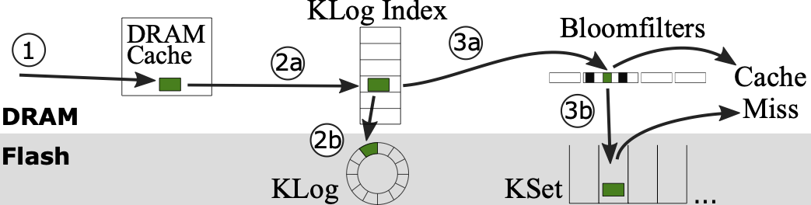
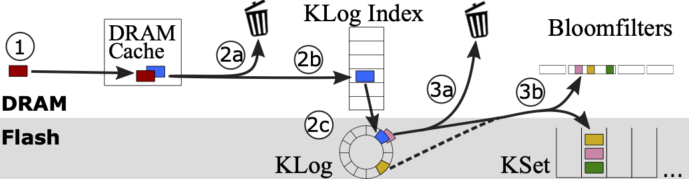
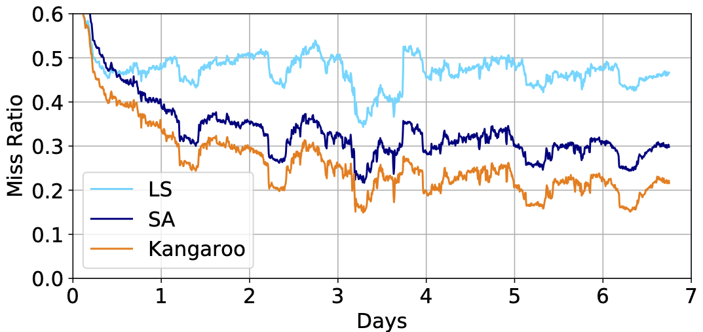

Kangaroo: Caching billions of tiny objects on flash
Many social-media and Internet-of-Things services have large numbers of tiny objects, each a few hundred bytes or less. For example, edges in Facebook’s social graph, which are needed to connect friends, posts, and images among other content, average under 100 bytes. Twitter tweets average 33 bytes.
These objects are permanently stored in large-scale databases, object stores, or filesystems. On top of this permanent storage layer, popular objects are cached. Caches allow quicker access to the popular objects and lower load on the storage layer. A cache’s effectiveness in these systems is primarily measured by the ratio of the number of requests it can fulfill to the total number of requests, or its miss ratio. As the quantity of data scales, caching layers need to also scale to maintain their miss ratio, otherwise end-user experiences such as website load times suffer. However, scaling traditional DRAM caches is prohibitively expensive. Instead, companies are increasingly using flash to build larger caches since flash is 100x cheaper per bit than DRAM.
Unfortunately, prior flash caches fall short of efficiently caching tiny objects, a challenging workload for flash caching. Prior approaches either increase the cache’s cost by having a high indexing overhead that requires excessive DRAM capacity to support or writing too much and rapidly wearing out flash devices. Thus, with prior designs, flash caching fails to live up to its potential as a cheap, large cache for tiny objects.
Kangaroo is a new flash cache optimized for tiny objects. It enables efficient caching of tiny objects by requiring only a small DRAM overhead and a small write overhead for cached objects. In addition, Kangaroo introduces a new cache eviction policy that uses minimal DRAM overhead while significantly reducing cache misses, further reducing load on the storage layer. Kangaroo is open source and implemented in CacheLib, Facebook’s open-source caching engine.
Kangaroo lowers the number of cache misses by 29% over state-of-the-art flash caching systems under production DRAM and flash constraints on traces from production social-graph caching workloads at Facebook and Twitter. These results are also corroborated with a test deployment of Kangaroo in a shadow production setup at Facebook. This research was published at SOSP 2021 where it won the Best Paper Award.
Prior approaches: Too much DRAM or too many writes
Prior flash caches fall into two main categories: log-structured caches and set-associative caches. Neither of these flash caches can efficiently support tiny objects because, as explained further below, log-structured caches require prohibitively large DRAM overheads whereas set-associative caches require prohibitively large write overheads.
Log-structured caches: Too much DRAM
Log-structured caches use flash as a circular log. During an insert, objects are first buffered in DRAM and then written to flash sequentially in large groups. Since objects can end up anywhere on flash, the cache maintains an in-memory index to find objects.
The advantage of a log-structured design is that it has a low write amplification. Write amplification is the number of bytes written to flash divided by the cumulative object size, and it represents the write overhead of a cache. A write amplification of one is optimal, though often it is higher. For example, writing a 100-byte object to flash by itself has a write amplification of ~40x since flash has a minimum write granularity of 4KB. Flash has a limited number of times it can be rewritten before becoming unusable. Therefore, this significant write amplification wears out the flash device quickly, requiring the device to be replaced quickly. Since a log-structured cache buffers objects in DRAM, it can wait until it has enough objects to write them to flash efficiently. Thus, log-structured caches have close-to-optimal write amplification.
However, log-structured caches have a large DRAM overhead when caching tiny objects. They have to keep an index entry for every on-flash object to enable finding those objects again on a lookup request. Since objects are around 100 bytes, there would be roughly 20 billion of them in a 2 TB flash cache. Even with the lowest overhead in the literature at 30 bits/object, the cache would require 75 GB just to the index objects on flash. Since caching on flash is meant to lower costs through removing DRAM, log-structured caches are inefficient for tiny objects because they require too much DRAM.
Set-associative caches: Too many writes
Meanwhile, set-associative caches use flash as a large hash table where each flash page is a single set, or hash bucket. During a lookup request, the cache hashes an object’s key to find it’s potential set on flash and reads that flash page to find the object.
Since the finding objects is based on a hash function, set-associative caches do not need large amounts of memory to track objects. Thus, unlike log-structured caches, set-associative caches have a low enough memory overhead to support large flash caches.
However, these caches write many more bytes than necessary. When inserting a new object, the cache has to write, at a minimum, a 4 KB flash page for every object. If objects are roughly 100 bytes, the cache has a 40x write amplification. Thus, set-associative caches are also inefficient for tiny objects because they require too many writes.
Kangaroo: An efficient tiny-object flash cache
Kangaroo caches tiny objects on flash effectively by combining log-structured and set-associative caches to reduce both DRAM and flash-write overheads. Kangaroo has two main parts: KLog, a small log-structured flash cache, and KSet, a large set-associative flash cache. At a high level, Kangaroo uses KLog as a staging area for objects so that writing them to KSet is more efficient.
Finding objects in Kangaroo

On a lookup, Kangaroo looks for the object in (1) the DRAM cache, then (2a) KLog’s index and (2b) KLog if the key is in the index, then finally (3a) KSet’s Bloom filters and (3b) KSet if the Bloom filters indicate the object could be there. If the object is not found in any of these locations, Kangaroo returns a miss.
Inserting objects in Kangaroo

On an insert, Kangaroo first places the object in (1) the DRAM cache. This insertion may evict an object from the DRAM cache. If the object is not admitted to flash, (2a) it is evicted from Kangaroo. For instance, objects can be evicted at this stage based on a random admission policy, where each object has a fixed probability of admission to the flash cache. Otherwise, it is inserted into (2b) KLog’s index and (2c) written to flash in KLog via a buffered write. When objects are evicted from KLog, they are again subject to an admission policy, described more in the next section, and (3a) can be evicted from Kangaroo entirely. Admitted objects are written to (3b) KSet along with any other objects in KLog that map to the same set in KSet.
One important aspect of the insertion path in Kangaroo that reduces write amplification is how Kangaroo moves objects from KLog to KSet. KLog often contains multiple objects mapping to the same set in KSet, such as the pink and yellow objects in the figure above. Whenever an object is evicted from KLog, Kangaroo proactively uses KLog’s index to find any other objects that map to the same set in KSet, and moves them to KLog as well. Since writing a set always requires writing 4 KB, regardless of the number of objects inserted, writing multiple new objects instead of just 1 greatly reduces the the write amplification.
Thus, Kangaroo amortizes writes to KSet over multiple objects, decreasing the overall number of bytes written to flash. Kangaroo accomplishes this amortization with a small KLog (~5% of flash), resulting in only a small DRAM overhead to index KLog’s entire capacity. Kangaroo thus addresses both the DRAM and flash-write overheads of caching tiny objects on flash.
Kangaroo optimizations
On top of this basic design, Kangaroo introduces additional techniques to increase its effectiveness. In particular, since Kangaroo is a cache and not a key-value store, it can evict objects to minimize writes. Kangaroo exploits this opportunity by adding a threshold admission policy that evicts objects from KLog instead of admitting them to KSet if there are fewer than n objects to insert to a set in KSet. This admission policy allows Kangaroo to guarantee that the write amplification for moving objects to KSet will be much lower than a set-associative cache.
Kangaroo also introduces RRIParoo, a low DRAM-overhead eviction policy for KSet based on the processor eviction policy RRIP. At a high level, RRIParoo keeps one bit in DRAM per object in KSet to represent whether an object has been requested since the object was last written to flash. When a set is rewritten, this bit is used to update a 3-bit recency values kept on flash per object. Objects in a set are then ordered by their 3-bit recency value and Kangaroo evicts the least valuable objects to make room for objects coming from KLog. Thus, RRIParoo allows an advanced eviction policy in KSet while keeping a low DRAM overhead.
Kangaroo provides further optimizations to reduce DRAM overhead and reduce misses, as explained in our SOSP’21 paper. Together, these optimizations allow Kangaroo to overcome the limitations of log-structured caches and set-associative caches, creating a flash cache that delivers on the goal of efficient caching for tiny objects.
Kangaroo outperforms other flash caches
We evaluated Kangaroo on a 2 TB flash drive using a production trace from Facebook under production DRAM and write rate constraints. We also evaluated CacheLib’s default small object cache (SA), a set-assocative cache that Facebook uses to serve its social graph, and an optimistic version of a log-structured cache (LS) with a full in-DRAM index.

Kangaroo reduces misses compared to LS by 56% and to SA by 29% over the last 2 days of the production FB trace. LS’s high DRAM overhead means that it cannot index the entire flash drive. Thus, it has a lower effective capacity, which increases its miss ratio. SA’s high write amplification means that it has to rate limit its insertions and greatly over-provision flash to prevent the flash device from wearing out too quickly. Kangaroo does not run into these issues and has a better eviction policy, allowing it to outperform other flash caches.
We corroborated these results in a production shadow deployment at Facebook. In addition, Kangaroo maintains its advantage if operated under different constraints, such as different write rate limits, more or less available DRAM, different tiny object workload, and larger device capacities. More details on these results can be found in our paper.
Conclusion
Kangaroo is a flash cache for billions of tiny objects that handles a wide range of DRAM and flash-write budgets. Kangaroo leverages prior log-structured and set-associative designs, together with new techniques, to achieve the best of both designs. Experiments using a trace from Facebook show DRAM usage close to the best prior DRAM- optimized design, flash writes close to the best prior write-optimized design, and miss ratios better than either. Kangaroo shows that flash caches can support tiny objects, an adversarial workload for DRAM usage and write amplification, while maintaining flash’s cost advantage.
For more details about Kangaroo, check out our SOSP presentation and paper.
Acknowledgments
I want to thank my other collaborators on this work: Benjamin Berg (CMU), Julian Tutuncu-Macias (CMU, now at Goldman Sachs), Juncheng Yang (CMU), Sathya Gunasekar (Facebook), Jimmy Lu (Facebook), Daniel Berger (Microsoft Research and University of Washington), Nathan Beckmann (CMU), and Greg Ganger (CMU). I would also like to give a special thanks to the CacheLib team at Facebook as well as both Facebook and Twitter for sharing traces with us.